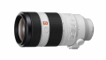
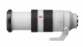
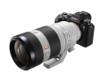

器材库 > 35mm画幅AF变焦镜头 > FE 100-400/4.5-5.6 GM OSS

详细规格
镜头类型
超远摄变焦镜头
发布日期
2017-04-19
焦距
100mm-400mm
最大光圈
f/4.5-5.6
最小光圈
f/32-40
视角（对角）
24° - 6°10
镜头结构
22片/16组
低/超低色散镜片
3片
光圈叶片
9片
最近对焦距离
98cm
最大放大倍率
约0.12-0.35倍
滤镜口径
77mm
镜头卡口
Sony E
防抖
是
颜色
白色
尺寸
93.9×205mm
重量
1395g
附件
镜头遮光罩/前镜头盖/后镜头盖/镜头袋
该产品暂无存档的网友点评
产品图 / 样片
FE 100-400/4.5–5.6 GM OSS

FE 100-400/4.5–5.6 GM OSS

FE 100-400/4.5–5.6 GM OSS
评测 / 相关文章
- 详细内容 （存档）
- 最佳远摄神镜 索尼SEL100400GM评测 （存档）
- ［资讯］海外测试索尼100-400 GM （存档）
- ［资讯］DxO公布索尼FE100-400测试成绩 （存档）
- ［试用］索尼FE100-400mm GM镜头实拍样片 （存档）
- ［资讯］索尼FE 100-400/4.5-5.6 GM OSS镜头图赏 （存档）
- ［资讯］索尼FE100-400令人印象深刻 （存档）
- ［资讯］看看索尼100-400FE有多大！ （存档）